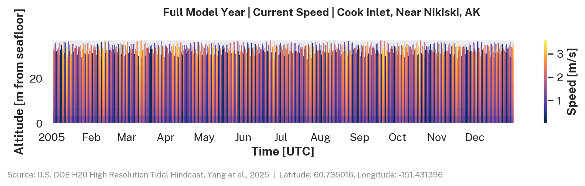
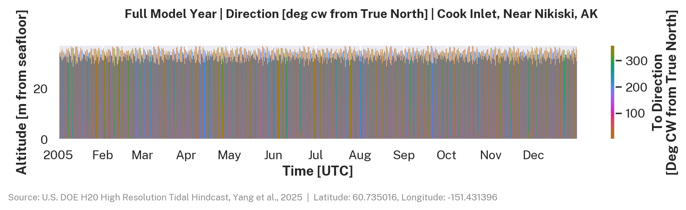
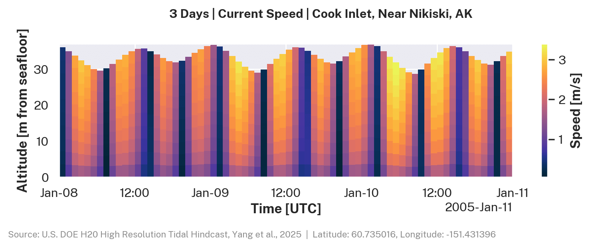
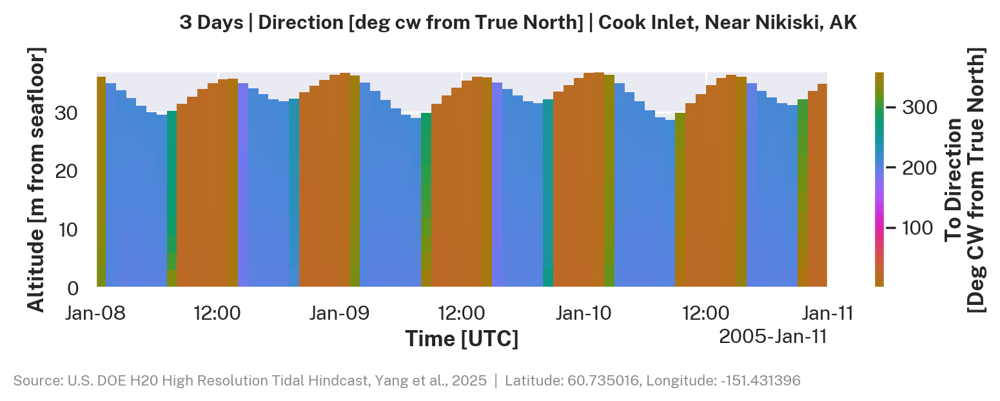
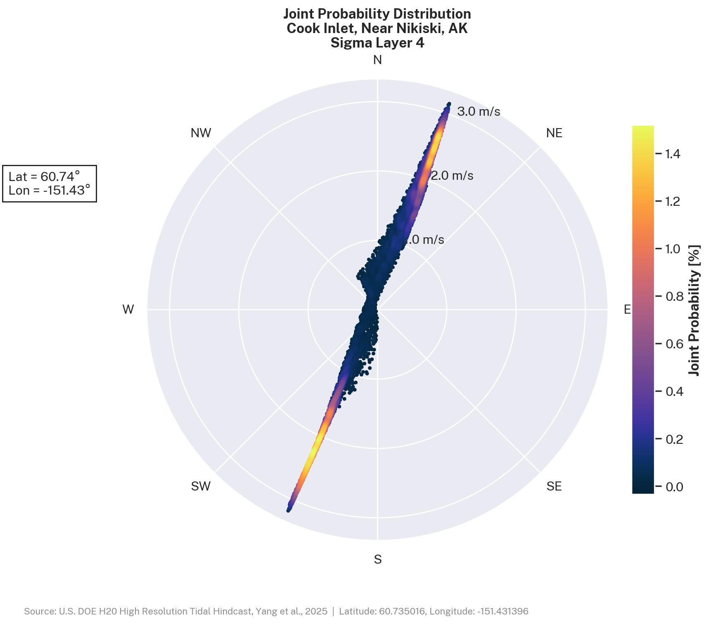
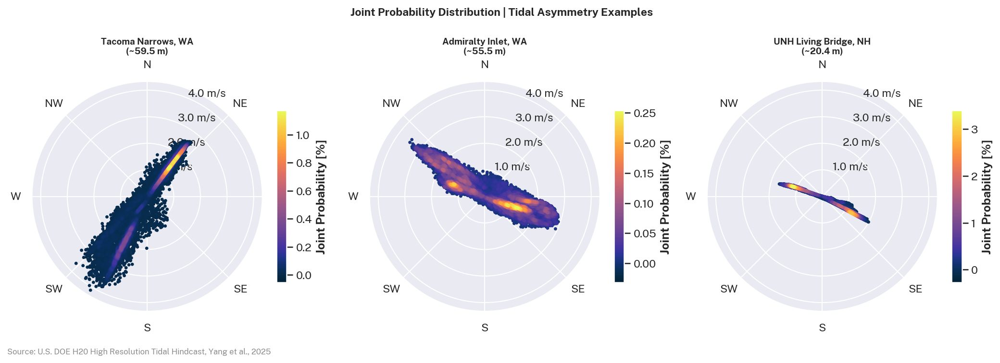
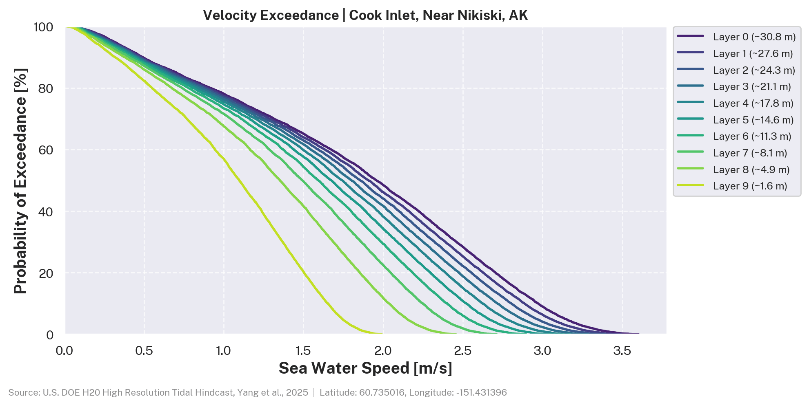

Tidal Current Energy¶
Tidal currents are the large-scale movement of water through coastal channels driven by the rise and fall of tides. In constricted passages, this movement can produce strong, sustained flows that can be captured by underwater turbines to generate electricity.
The Moon and Sun exert a gravitational pull on the ocean. As the Earth rotates beneath them, the alignment between any fixed coastal location and that pull changes on a predictable schedule, driving the tidal cycle [@noc_tidal_modeling]. The two primary drivers are Earth's rotation (~24 hours), which produces the roughly twice-daily flood and ebb, and the Moon's orbit (~29.5 days), which produces the spring-neap cycle. While the underlying drivers are predictable, the actual current speed and direction at any coastal location is shaped by local geography in ways that are difficult to estimate without detailed numerical simulation.
To better understand tidal energy potential in the United States, the U.S. Department of Energy's H2O program and national laboratories created detailed computer models of tidal currents using high-performance computing. The open-source datasets include current speed, direction, and water movement at different depths for five major U.S. coastal sites, helping researchers and developers evaluate locations and design tidal energy projects.
Resource Characterization Workflow¶
IEC TS 62600-201 defines two stages for tidal resource assessment: a feasibility study (Stage 1) covering the broader estuary or channel, and a layout design study (Stage 2) focused on a specific development site.
Site Screening¶
The Marine Energy Atlas displays time- and depth-averaged current speed and power density across all five hindcast domains. Grid cells are color-coded by magnitude. The point-query tool returns summary statistics for a selected location.
Feasibility Study (IEC 62600-201 Stage 1)¶
A Stage 1 feasibility study investigates the scale and attributes of the energy resource within a study area. The hindcast provides current speed and direction at 10 depth layers over the full model duration, from which the following can be derived:
- Mean current speed: time-averaged speed at each depth layer
- 95th-percentile current speed: upper bound on current speed for a given location
- Mean power density: time-averaged kinetic energy flux per unit rotor area (W/m²)
- Velocity exceedance curve: the fraction of time current speed exceeds a given threshold
- Joint probability distribution: the joint distribution of current speed and direction
The Marine Energy Atlas provides a point-and-click interface for summary statistics at any model grid point. The us-marine-energy-resource Python library (which includes the us-tidal command line tool) can query tidal hindcast data by point, transect, or area, with built-in tools to visualize and analyze the results:
import us_marine_energy_resource.tidal_hindcast as tidal
# Fetch the full hindcast time series for the nearest grid point.
# Data is downloaded from S3 and cached locally on first call.
df = tidal.get_data_at_point(lat=60.73, lon=-151.43)
# Plot velocity exceedance curves across all depth layers.
fig, stats = tidal.plot_velocity_exceedance(df)
# Plot the joint probability distribution at a single depth layer.
fig = tidal.generate_tidal_joint_probability(df, sigma_layer=4)
# Query from the command line, no Python required.
# See Data Access for the full CLI reference.
us-tidal 60.73,-151.43 --info
Prerequisites
See Getting Started for installation and setup instructions. Full us-tidal CLI reference is in Data Access.
Layout Design (IEC 62600-201 Stage 2)¶
A Stage 2 layout design study focuses on a specific development site to determine annual energy production (AEP) and support array layout decisions. The full depth-resolved time series can be queried by point, transect, or area using the us-marine-energy-resource Python library, which includes the us-tidal CLI. Raw data is also available for bulk access via HSDS or AWS S3.
Power Performance Assessment and Engineering Design Inputs¶
For power performance assessment, IEC 62600-200 [@iec_62600_200] provides more specific guidance. The hindcast provides current speed, direction, and water depth at 10 depth layers over the full model year, queryable by point, transect, or area via the us-marine-energy-resource Python library, which includes the us-tidal CLI.
Data Access¶
| Use case | Interface | Reference |
|---|---|---|
| Spatial resource exploration and point statistics | Marine Energy Atlas | Atlas guide |
| Query tidal hindcast data by point, transect, or area, with built-in tools to visualize and analyze the results | us-marine-energy-resource Python library (includes us-tidal CLI) |
Data Access |
| Bulk and raw data access | HSDS or AWS S3 | HSDS Setup · AWS S3 |
| Variable definitions and units | Variable documentation | Tidal Variables |
Example Site¶
The visualizations below use data from a single grid point in Upper Cook Inlet, Alaska (60.74°N, 151.43°W), near Nikiski. Cook Inlet has some of the strongest tidal currents in the U.S. The map shows the model domain boundary and the example point. See Regional Coverage for all five dataset extents.
Vertical Current Structure¶
FVCOM resolves the water column with 10 sigma (terrain-following) layers. Current speed decreases toward the seafloor due to bottom friction.
The depth-time plot below shows current speed across all 10 sigma layers for the full hindcast year at Upper Cook Inlet, AK. Each band represents one sigma layer, covering an equal fraction of the water column from surface to seafloor.
{kind=link}

The direction plot shows the flood-ebb reversal and any rotational signal in the water column.
{kind=link}

A 3-day window shows individual tidal cycles and the vertical shear between the surface and bottom layers.
{kind=link}

{kind=link}

For background on sigma coordinates see Sigma Layers.
Joint Probability Distribution¶
A joint probability distribution (JPD) is a polar histogram of current speed and direction at a single depth layer. It shows the dominant flow direction, flood-ebb asymmetry, and the speed distribution across the tidal cycle.
The plot below uses sigma layer 4 (mid-column) at Cook Inlet, AK. The reversing tidal current reflects the flood-ebb cycle in the inlet.
{kind=link}

Tidal asymmetry - where the flood and ebb half-cycles differ in speed or duration - can have a significant effect on energy estimates. The comparison below shows the bottom sigma layer JPD for Tacoma Narrows, Admiralty Inlet, and the Piscataqua River.
{kind=link}

Velocity Exceedance¶
An exceedance curve shows what fraction of the year the current exceeds a given speed. Because power scales with the cube of speed (see Spring-Neap Cycle), the exceedance curve directly characterizes the annual energy available at a given sigma layer.
Note
Sigma layers follow the shape of the seafloor and water surface, so the depth each layer represents varies across the model domain. See Sigma Layers.
Exceedance curves are a standard output for IEC 62600-201 Stage 1 feasibility studies [@iec_62600_201]:
{kind=link}

How FVCOM Models Tidal Currents¶
The datasets are produced with the Finite Volume Community Ocean Model (FVCOM) [@fvcom], a 3D coastal ocean model designed for complex coastlines [@noc_tidal_modeling].
Governing equations. FVCOM solves the 3D Reynolds-averaged Navier-Stokes equations for horizontal velocities \(u\), \(v\) and sea surface elevation \(\eta\) on a triangular mesh. Tidal forcing is applied at open boundaries from a global ocean tidal atlas.
Unstructured grid. FVCOM uses a triangular mesh that can be refined around complex coastlines and narrow passages. Grid resolution at the five U.S. sites ranges from ~10 m in narrow channels to ~500 m offshore. See Unstructured Grid.
Sigma coordinates. The water column is divided into vertical layers that scale with local depth, so the seafloor and surface are resolved at any water depth. The dataset provides 10 sigma layers per grid point. See Sigma Layers.
Boundary conditions. Tidal constituents from a global ocean tidal atlas are applied at the open boundaries of each regional domain. The model runs for a full hindcast year. See Model Configuration.
Validation. Model output is compared against tide gauge observations and, where available, ADCP current measurements using standard skill metrics (RMSE, bias, \(R^2\)). See Validation.
Datasets¶
The H2O High Resolution Tidal Hindcast provides 3D tidal current data at five U.S. coastal locations. Each dataset includes depth-resolved current speed, direction, power density, water depth, and tidal range derived from FVCOM simulations.
| Location | Period | Sampling | Grid Points |
|---|---|---|---|
| Aleutian Islands, AK | 2010-2011 | Hourly | 797,978 |
| Cook Inlet, AK | 2005 | Hourly | 392,002 |
| Piscataqua River, NH | 2007 | Half-hourly | 292,927 |
| Salish Sea, WA | 2015 | Half-hourly | 1,734,765 |
| Western Passage, ME | 2017 | Half-hourly | 231,208 |
Click a location to view documentation including model configuration, variable descriptions, and data access.
Next Steps¶
- Browse the datasets - click a location in the table above to view model configuration, variable descriptions, and data access.
- Access the data - see Data Access for installation, Python library usage, CLI reference, and bulk download options.
- Read the technical background - see Sigma Layers, Unstructured Grid, and Model Configuration for model details.